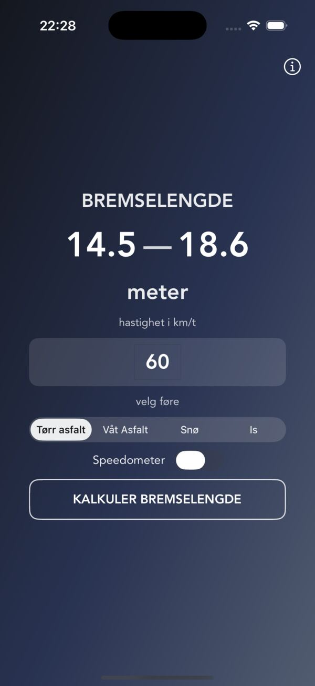
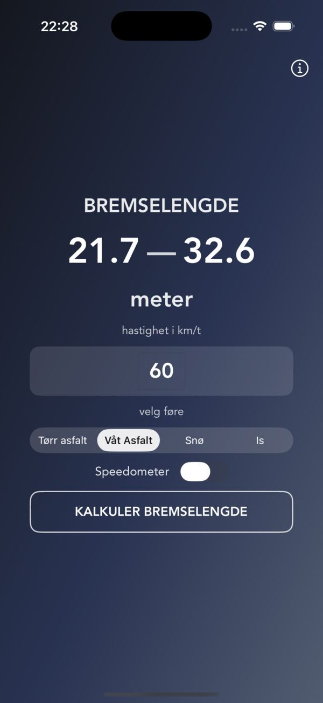
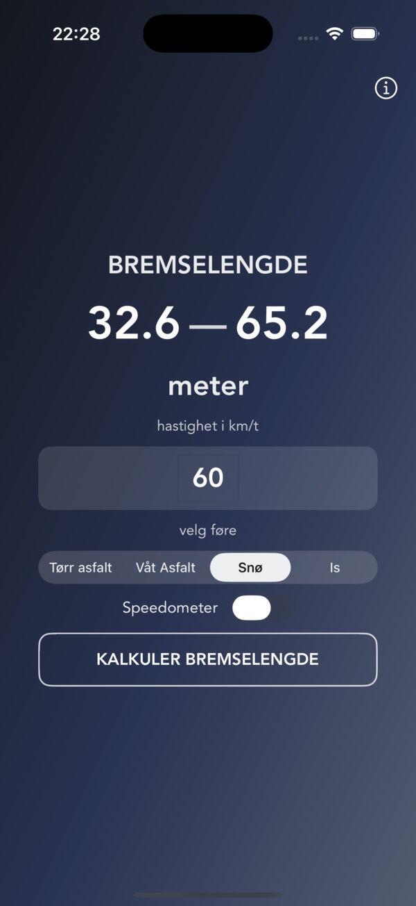
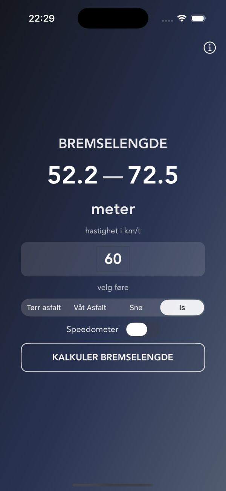

Flere veiforhold
Beregn bremselengde på tørr asfalt, våt asfalt, snø eller is.

Bremselengder for iPhone
Bremselengder er en enkel kalkulator som viser bremselengden til en vanlig personbil ved ulike hastigheter og kjøreforhold. Sammenlign tørr og våt asfalt, snø og is på noen få sekunder, og se hvor mye føret betyr.
Rask oversikt når fart og føre endrer seg
Beregn bremselengde på tørr asfalt, våt asfalt, snø eller is.
Bruk speedometeret eller skriv inn hastigheten manuelt når du vil sammenligne.
Beregning og eventuell posisjonsbruk skjer lokalt på enheten din.
Skriv inn farten, velg føre




Fart, friksjon og tyngdekraft
Bremselengden er strekningen bilen kjører fra bremsene tar til den står stille. Den avhenger av farten og av friksjonen mellom dekk og vei. Appen bruker den vanlige formelen fra fysikken:
d = v² / (2 · μ · g) d = bremselengde i meter · v = fart i m/s (km/t delt på 3,6) · μ = friksjonstall · g = 9,81 m/s²
Friksjonstallet μ sier hvor godt dekkene griper. Det varierer med dekk, temperatur og underlag, og derfor viser appen et spenn i stedet for ett tall. Det korte tallet gjelder gode forhold, det lange gjelder dårlige.
| Føre | Friksjonstall μ |
|---|---|
| Tørr asfalt | 0,7–0,9 |
| Våt asfalt | 0,4–0,6 |
| Snø | 0,2–0,4 |
| Is | 0,18–0,25 |
Avrundet til hele meter
| Fart | Tørr asfalt | Våt asfalt | Snø | Is |
|---|---|---|---|---|
| 30 km/t | 4–5 | 6–9 | 9–18 | 14–20 |
| 50 km/t | 11–14 | 16–25 | 25–49 | 39–55 |
| 60 km/t | 16–20 | 24–35 | 35–71 | 57–79 |
| 80 km/t | 28–36 | 42–63 | 63–126 | 101–140 |
| 90 km/t | 35–46 | 53–80 | 80–159 | 127–177 |
| 110 km/t | 53–68 | 79–119 | 119–238 | 190–264 |
Legg merke til at farten står i annen potens i formelen. Dobbel fart gir fire ganger så lang bremselengde. Fra 50 til 100 km/t går bremselengden på tørr asfalt fra rundt 11–14 meter til rundt 44–56 meter. På is er bremselengden tre til fire ganger så lang som på tørr asfalt ved samme fart.
Reaksjonstiden kommer i tillegg
Appen viser bremselengden. Før du begynner å bremse, kjører bilen videre mens du oppdager faren og flytter foten til bremsen. Den strekningen kalles reaksjonslengde. Til sammen blir det stopplengden:
stopplengde = v · t + v² / (2 · μ · g) t = reaksjonstid i sekunder
Med én sekunds reaksjonstid kjører du omtrent 14 meter ved 50 km/t og 22 meter ved 80 km/t før bremsene i det hele tatt tar. Ved 80 km/t på tørr asfalt blir stopplengden dermed rundt 50–58 meter, og på snø rundt 85–148 meter. Er du trøtt eller ufokusert, blir reaksjonstiden lengre.
Om tallene og appen
De er et anslag for en gjennomsnittlig personbil. Formelen er forenklet: dekk, bremser, last, helling og vær kan gi store utslag. Bruk tallene til å forstå hvor mye fart og føre betyr, ikke som en garanti for hvor bilen stopper.
Nei. Speedometeret bruker GPS for å vise farten, men appen ber deg om ikke å bruke den når du er fører. Slå det på som passasjer, eller skriv inn farten selv.
Bremselengder er gratis, uten reklame og uten kjøp i appen. Den krever iOS 15 eller nyere.
Posisjonen brukes bare til å regne ut farten mens speedometeret er slått på. Den lagres, sendes eller deles ikke. Les mer i personvernerklæringen for Bremselengder.